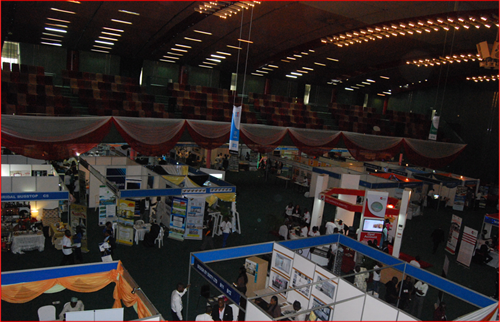
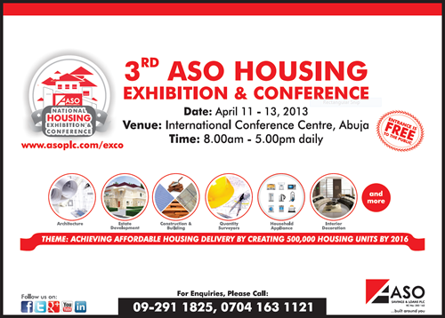

2013
click to expand/collapse
-
ASO Savings & Loans, PLC chosen as Worldwide Client of the Year October 15, 2013
-

ASO Savings & Loans PLC was chosen as the Service Quality Institute's (SQI) Worldwide Client of the Year in Istanbul Turkey on April 12, 2013 during the awards banquet at the Worldwide Customer Service Conference.
Mohammed Shehu (Executive Director, Operations and Technology) was responsible for the implementation of the Service Quality Institutes plan for ASO Savings & Loans, PLC, and he was represented by the Head, Customer Service Unit; Liz Taylor who received ASO's award. Micah Ndackson, SQI's top distributor in Nigeria who has also helped implement the customer service plan at ASO, was also present at the awards banquet.
John Tschohl, the Global Leader in Customer Service said; "ASO Savings & Loan, PLC is committed to creating a service culture. They have made significant improvements in their customer service and are leading the world on creating a service culture.”
The leadership and vision by CEO Hassan Usman, Executive Director Mohammed Shehu, and Training Manager Liz Taylor have created the first Primary Mortgage Institution in Africa to focus seriously on offering an exceptional customer experience.
-
-
ASO Funds Development Of Police Housing Estate in Lagos July 25, 2013
-
Mr. Olatunde Ayeni, Chairman, ASO Savings & Loans- financier of the Goodluck Jonathan Housing Estate, Idimu, Lagos; Oba of Lagos, Rilwan Akiolu, Lieutenant Colonel Ogogbane Adegbe Aide de Camp to Mr. President, Special Guest of Honour Dr Ebele Jonathan, President, Commander in Chief of Armed Forces of Nigeria and Mr. Muhammed Abubakar, Inspector General of Police, making a presentation at the official unveiling of the 200 of the 504 units of 3-Bedroom block of flats. The Managing Director of ASO Savings & Loans Plc, Hassan Musa Usman has revealed that his organisation is resolute in its determination to support any government initiative at providing affordable homes for Nigerians at all levels.
He stated this on Friday July 19, 2013 at the official commissioning of the Goodluck Jonathan Police Housing Estate in Idimu, Lagos. At the ceremony which was performed by President Goodluck Jonathan, the ASO Savings boss stated that his firm financed the highly capital intensive housing scheme because the project concept is in tandem with its organisation’s drive at achieving 500 000 affordable Housing for Nigerians by year 2016.
As one of the foremost Primary Mortgage Institutions in Nigeria with the vision "To be the Mortgage Bank of choice", part of our determination is to tackle the housing needs in Nigeria by partnering with reputable developers, State Governments, Ministries and agencies for the provision of affordable houses for the low and middle income groups.
"This led to our partnership with Remax Realtors Limited and the Cooperative Society of the Nigeria Police for the successful construction of Goodluck Jonathan Police Housing Estate. Remax Realtor Limited is an indigenous, reputable and successful real estate developer. While they are the developers, we provide the finance and mortgage facility for beneficiaries of the housing scheme", Musa Usman explained.
The scheme is designed to meet the housing needs of officers and men of the Nigeria Police, low and middle income groups among the general public. The scheme which involves the construction of 504 housing units of 3-bedroom flats, consisting of 84 blocks (or 42 clusters of 2 blocks each sharing the same staircase) on 3 levels (ground floor and 2 suspended floors), is being constructed in phases.
Each of the blocks contains 6 flats with a gross floor area measuring approximately 115 m2 each. The size of the land for the project is 11.431 Hectares.
-
-
ASO Savings & Loans, PLC emerges as "Leadership Mortgage Bank of the Year 2012" April 23, 2013
-
Hassan Musa Usman
Managing Director, ASO Savings & Loans, PLCASO has been awarded the "Leadership Mortgage Bank of the Year 2012" by the Leadership Newspapers, at the 2013 Annual Conference Awards Ceremony held at the International Conference Center, Abuja on April 16, 2013. Judged as a company driven by sound financial principles with demonstrable passion for excellence, this is notably the 3rd time since 2009, the Bank has be so honored. The MD, Hassan Musa Usman was at the ceremony to receive this award on behalf of the Bank.
-
-
ASO Hands Over 40 units of ASO Grove Estate to NNPC Pensions April 22, 2013
-
L-R: The Company Secretary, Bilkisu Rimi; MD ASO, Hassan Musa Usman; MD NNPC Pension, Hamade Sambo, during the signing Ceremony at ASO Savings & Loans Corporate Head Office ASO Savings & Loans, PLC in March 2013 held a signing ceremony to mark the handover of 40 units of the ASO Grove Estate to NNPC Pensions. ASO Grove Estate is one of the Bank's funded estates, located in Maitama extension of Abuja. It boasts of over 59 exclusive homes and offers luxury community facilities such as a swimming pool, club house, lawn tennis court, internet service DSTV Services and more.
-
-
President Goodluck Jonathan declares Open the 3rd ASO Housing EXCO April 12, 2013
-
L-R: Hassan Usman (Managing Director, ASO Savings & Loans, PLC), Terver Gemade (Managing Director, Federal Housing Authority (FHA)), Ama Pepple (Minister of Lands, Housing & Urban Development), Ezekiel Nya-Etok (Chairman, Sub-Committee on Low Income Housing/Ministerial Implementation Team on Housing Delivery in Nigeria), Mrs Isoken Omo (Managing Director, ASO Investment Development Company) declaring the 3rd ASO Housing Exhibition & Conference open in Abuja on April 11, 2013.  Overview of the Exhibition Hall at the International Conference Centre Abuja, with over 100 exhibitors in the home value chain, in attendance. With over 100 exhibitors in attendance at the 3rd ASO Housing Exhibition and Conference, the event was successfully declared open by President Goodluck Ebele Jonathan, GCFR, BNER,GCON, who was ably represented by the Honorable Minister of Lands, Housing & Urban Development, Amal Pepple, CFR. Please follow this link to view details of the event.
-
-
ASO Housing EXCO: Creating A Roadmap To Nigeria's Housing Needs April 8, 2013
-
 Various issues militating against satisfying the housing needs of Nigerians will become focal points at this year’s edition of the International ASO Housing Exhibition and Conference, slated for April 11, 12 and 13 at the International Conference Centre, Abuja.
During the first two of the three day event, locally-based and international experts in the housing value chain will extensively deliberate on four salient topics, namely;Funding, Housing Delivery and Infrastructure ,Mortgages and Legislation.
The conference will be attended by stakeholders in the housing industry from the public and private sectors of the economyincludingnational policy makers, Federal and State government representatives, real estate investors, professional mortgage providers, urban and Regional planners, Home developers, Architects, State & Federal Housing Authorities, house buyers and other members of the general public.
Themed "Achieving Affordable Housing Delivery by creating 500,000 housing units by 2016";the initiative was conceived to create an effective template for addressing the chronic housing shortage as well as poor access to housing finance in the country.This is with a view to create a roadmap for private and public sector partnership for attaining the vitally important Vision 2020 objective of the Federal Government of Nigeria of providing affordable homes for all Nigerians.
It is salutary that such collaborations and objectives are in line with and complementary to President Goodluck Ebele Jonathan’s government’s Transformation Agenda in the areas of infrastructural and housing development. This is more so because the government at several forahas called for private sector participation in the attainment of its economic transformation goals.
Speaking at the last Presidential Stakeholders’ Retreat at the Presidential Banquet Hall, Abuja, President Jonathan noted that inequitable access to land for housing development and inadequacy of housing in view of the national housing deficit estimated at about 16 to 17 million units, had remained a critical challenge to all stakeholders in the sector.
In his view, if the deficit is to be bridged, ways must be soughtto provide affordable housing, especially to the non-income, low income, lower-middle income and informal sector worker. All these, he said, can only be achieved if developers in the private sector are ready to partner and complement government efforts.
With the exhibition progressing simultaneously; panellists including; Evans Kofi Essienyi of the Affordable Housing Institute, Ghana; Dr. DelphineSangodeyiof AHI North and West Africa Associates, Paris; Stephen Terseer ABAR1st Vice President, Nigerian Bar Association, Lagos; Kayode Omotosho Executive Secretary, MBAN, Lagos and a host of other distinguished speakers will present on the four salient topics at four distinct sessions. While the session onFundingwould consider among other issues avenues of securing funding for the creation of 500,000 housing units as well as the development of public/private partnership models for the realization of this project, the Delivery and Infrastructure would explore current developments in innovative construction and building methodscapable of creating Nigeria-specific dwellings affordable by the majority of the populace.
The panel on Mortgages would for illustration examine the latest thoughts among regulators and practitioners on implementing effective and sustainable framework for mortgage lending in Nigeria, addressing capital rules, responsible lending, and consumer protection. Finally, the Legal panelists would consider among other issues, the contemporary relevance of the Land Use Act 1978 in the context of land use, development and maintenance of a of reliable land database nationwide, property ownership rights, title, foreclosure etc. in the context of supporting the delivery of affordable housing.
The 2013 annual ASO National Housing Exhibition & Conference aims among others things, to come up with a communiqué that could assist stakeholders in the Nigerian housing industry, mould appropriate policy framework for housing development. The event promises a worthwhile experience for all participants including opportunities for attendees to the exhibition to shop for the homes of their dreams at the nation’s premier housing trade fair.
ASO Savings & Loans Plc is Nigeria’s leading Primary Mortgage Institution (PMI) with a vision of being “…the mortgage bank of choice, and operating by "…build[ing] mutually profitable relationships anchored on a passion for excellence".
-